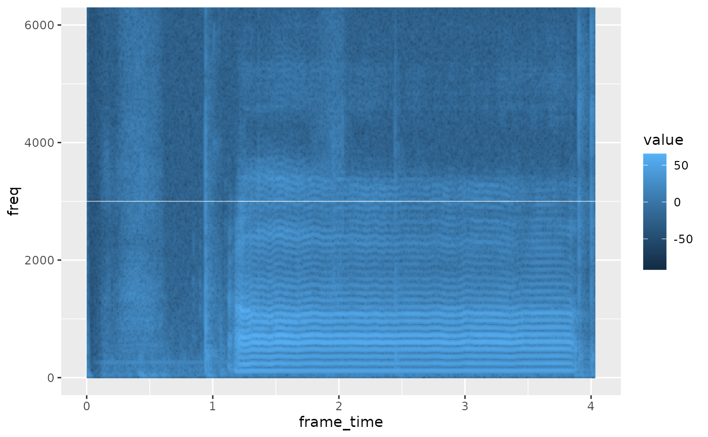

Plot time-aligned tracks of an AsspDataObj
geom_track.RdA ggplot2 layer that draws the tracks of an AsspDataObj (or of the wide
table written by as.data.frame.AsspDataObj()) as one line per track,
against time in seconds. Scales, facets, coordinates, legends and themes
apply as with any other layer.
Usage
geom_track(
mapping = NULL,
data = NULL,
...,
tracks = NULL,
time = "frame_time",
na.zeros = FALSE,
na.rm = FALSE,
show.legend = NA,
inherit.aes = FALSE,
stat = "identity",
position = "identity"
)Arguments
- mapping
Set of aesthetic mappings created by
ggplot2::aes(), applied to the track table the layer prepares (frame_time,value,track,band,bin). WhenNULL(default) the tracks are drawn withaes(x = frame_time, y = value, colour = track, group = track).- data
The data to display: an
AsspDataObj(from atrk_*function,read_audio(),read_ssff()orread_track()), the wide table fromas.data.frame.AsspDataObj(), or an already long track table withframe_time,valueandtrackcolumns. Inherited from the plot whenNULL.- ...
Other arguments passed on to
ggplot2::layer().- tracks
Character. Tracks to plot, matched against the column name (
"RMS_dB"), the track template ("RMS[dB]") or the object's track name.NULL(default) plots every track.- time
Character. Preferred name of the time column of
data. The plotted table always names itframe_time.- na.zeros
Logical. Convert stored zeros to
NA, so that undefined frames (unvoiced f0, absent formants) break the line instead of dropping to zero. Default:FALSE.- na.rm
Logical. Remove
NAvalues before drawing. Default:FALSE.- show.legend, inherit.aes, stat, position
Passed on to
ggplot2::layer(), with ggplot2's usual defaults exceptinherit.aes = FALSE(see Details).
Details
Track data is rewritten into a long table (frame_time, value, track,
band, bin) before the layer is built, because ggplot2 hands a layer only
its evaluated aesthetics. A mapping therefore refers to that table, and
inherit.aes defaults to FALSE: the mapping goes on the layer, as in
geom_track(data = obj, mapping = aes(x = frame_time, y = value, group = track)).
tracks also matches bands, so tracks = "Fi[Hz]" draws F1..Fn while
tracks = "F1_Hz" draws a single formant.
For a column-wise plot of the wide table (one column against another), use
ggplot2::geom_line() or ggplot2::geom_point() on
as.data.frame.AsspDataObj() instead: ggtrack(df, aes(x = F2_Hz, y = F1_Hz)) + geom_point().
Layers on different objects compose, so a waveform can be drawn over a
spectrogram by adding one geom_spectrogram() and one geom_track().
The layer carries one row per record and track (a waveform has one row per
sample), so window a long recording at read time with
read_audio(wav, begin = …, end = …).
See also
geom_spectrogram() for multi-column spectral tracks, ggtrack()
for automatic track labels, as.data.frame.AsspDataObj() for the wide
table.
Examples
wav <- system.file("samples", "sustained", "a1.wav", package = "superassp")
# \donttest{
if (requireNamespace("ggplot2", quietly = TRUE)) {
library(ggplot2)
# every track of the object, one line each
rms <- trk_rms(wav, toFile = FALSE, verbose = FALSE)
ggplot() + geom_track(data = rms)
# a subset, labelled from the track metadata
fms <- trk_formant_forest(wav, numFormants = 3, toFile = FALSE, verbose = FALSE)
ggtrack(fms) + geom_track(tracks = c("F1_Hz", "F2_Hz", "F3_Hz"))
# the raw waveform
audio <- read_audio(wav, samples = TRUE)
ggplot() + geom_track(data = audio)
# a waveform drawn over the spectrogram of the same file
dft <- trk_dft_spectrum(wav, toFile = FALSE, verbose = FALSE)
ggplot() +
geom_spectrogram(data = dft) +
geom_track(data = audio,
mapping = aes(x = frame_time, y = value / 8000 + 3000),
colour = "white", linewidth = 0.2) +
coord_cartesian(ylim = c(0, 6000))
}

# }